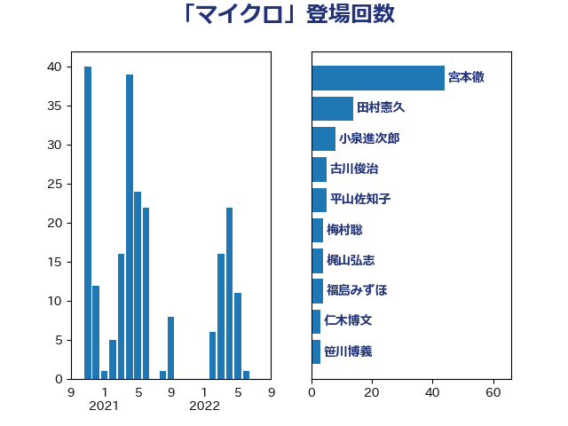

単語「マイクロ」

| 宮本徹 | 日本共産党 | 44 回 |
| 田村憲久 | 自由民主党 | 14 回 |
| 小泉進次郎 | 自由民主党 | 8 回 |
| 古川俊治 | 自由民主党 | 5 回 |
| 平山佐知子 | 無所属 | 5 回 |
| 梅村聡 | 日本維新の会 | 4 回 |
| 梶山弘志 | 自由民主党 | 4 回 |
| 福島みずほ | 社会民主党 | 4 回 |
| 仁木博文 | 無所属 | 3 回 |
| 笹川博義 | 自由民主党 | 3 回 |
| 串田誠一 | 日本維新の会 | 2 回 |
| 亀岡偉民 | 自由民主党 | 2 回 |
| 井坂信彦 | 立憲民主党 | 2 回 |
| 寺田静 | 無所属 | 2 回 |
| 後藤茂之 | 自由民主党 | 2 回 |
| 白石洋一 | 立憲民主党 | 2 回 |
| 福島伸享 | 無所属 | 2 回 |
| 長妻昭 | 立憲民主党 | 2 回 |
| 一谷勇一郎 | 日本維新の会 | 1 回 |
| 中島克仁 | 立憲民主党 | 1 回 |
| 中野洋昌 | 公明党 | 1 回 |
| 今枝宗一郎 | 自由民主党 | 1 回 |
| 和田義明 | 自由民主党 | 1 回 |
| 大岡敏孝 | 自由民主党 | 1 回 |
| 小宮山泰子 | 立憲民主党 | 1 回 |
| 小林鷹之 | 自由民主党 | 1 回 |
| 山口壯 | 自由民主党 | 1 回 |
| 岸信夫 | 自由民主党 | 1 回 |
| 新妻秀規 | 公明党 | 1 回 |
| 末松信介 | 自由民主党 | 1 回 |
| 杉本和巳 | 日本維新の会 | 1 回 |
| 林芳正 | 自由民主党 | 1 回 |
| 浅野哲 | 国民民主党 | 1 回 |
| 牧原秀樹 | 自由民主党 | 1 回 |
| 田村貴昭 | 日本共産党 | 1 回 |
| 矢倉克夫 | 公明党 | 1 回 |
| 石井苗子 | 日本維新の会 | 1 回 |
| 萩生田光一 | 自由民主党 | 1 回 |
| 西村康稔 | 自由民主党 | 1 回 |
| 金子恵美 | 立憲民主党 | 1 回 |
| 青木愛 | 立憲民主党 | 1 回 |